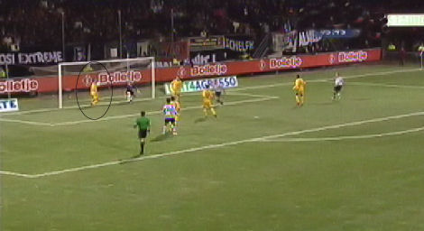

|
Heracles - Roda JC (1-1) 2 december 2006
|
In de 29e min. komt Bodor het veld in voor Meeuwis die een liesblessure heeft.
Cissé stoomt op over rechts en ziet niet dat Oper vrij staat.
Oper maakt Cissé duidelijk dat hij beter uit zijn doppen moet kijken.
Uit een vrije trap plaatst Ramzi de bal op het hoofd van Saeijs die de bal strak
in
de linkerhoek kopt, 0-1 (29').
Het spitsenprobleem bij Roda JC kan niet beter geïllustreerd worden door alweer
een doelpunt gemaakt door een verdediger.

Saeijs promoveert zich tot de belangrijkste Rodaspeler door een schot op de
doellijn te stoppen met de borst. Roda ontsnapt!
Ongelooflijk prutswerk van Cissé die vrij voor doelman Pieckenhagen te weinig
techniek aan boord blijkt te hebben om de deze te omspelen. Hij schiet tegen de
keeper aan waardoor een vrijwel zekere zege wordt verknoeid.
In de 70e min schiet Da Silva de gelijkmaker binnen. De bal gaat tussen de benen
van de verder goed keepende Kujovic: 1-1.
'Everton' Ramos Da Silva. Jammer dat Roda niet in dergelijke spelers investeert.
Het blijft 1-1 waardoor Roda twee kostbare punten
verspeelt. Om moedeloos van
te worden. Huub Stevens wijt de slappe spelhervatting van Roda aan "naïviteit".
TEKSTVERSLAG
Heracles heeft zaterdagavond toch een punt weten te
pakken tegen een sterker Roda JC, in Almelo werd het 1 - 1.
Heracles begon de wedstrijd goed, maar al snel was het Roda JC dat het heft in
handen nam. Na 29 minuten kwam de ploeg van Huub Stevens op voorsprong. Jan Paul
Saeijs kopte een vrije trap van Adil Ramzi achter doelman Martin Pieckenhagen en
bracht zo de 0-1 op het scorebord.
Jan Paul Saeijs was het ook die zijn ploeg kort na rust redde door de bal op de
lijn weg te koppen. Sekou Cissé had niet kort daarna de kans om Roda op 2-0 te
zetten. Maar hij miste 1 tegen 1 tegenover Martin Pieckenhagen. Kort na die kans
liet Roda JC zich naarmate de wedstrijd vorderde steeds verder terug zakken.
Heracles werd steeds gevaarlijker en twintig minuten voor het einde wist Everton
de 1-1 van dichtbij binnen te tikken.
Heracles : Martin Pieckenhagen, Remon de Vries, Marnix Smit, Ragnar Klavan, Mark
Looms, Stefaan Tanghe, Rob Maas, Robbert Schilder, Bernard Hofstede, Everton en
Diego Biseswar.
Roda JC : Vladan Kujovic, Jan-Paul Saeijs, Pa Modou Kah, Davy de Fauw, Marcel de
Jong, Kemy Agustien, Marcel Meeuwis, Andres Oper, Sekou Cissé, Jamaïque
Vandammer en Adil Ramzi.
Doelpunten:
Jan-Paul Saeijs 29' 0 - 1
Everton 70' 1 - 1
Kaarten:
Geel: Ragnar Klavan Heracles
Wissels:
Boldizsár Bodor 23' voor Marcel Meeuwis
Dieter van Tornhout 76' voor Andres Oper
Kwame Quansah 85' voor Bernard Hofstede
Marc Höcher 90' voor Everton
Scheidsrechter Jan Wegereef
Toeschouwers 8500
© Koempels Pleasure Dome
|